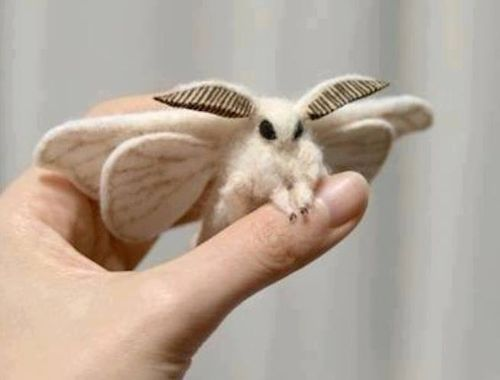

Lehetséges, de elég igényes fajta háziállatka!
Mire is van szükségük?
A közel trópusi hőmérsékletnek megfelelő szobahőmérséklet, ami 22° és 28°.
Szükségük valamilyen cserjére, ami nagyobb levelekkel rendelkezik az átalgnál. Mivel ebben a "környezetben" érzik magukat biztonságban.
Növényevő állat, így a táplálékával nem kell különösen foglalkozni. A kialakított lakóhelye tökéletes arra, hogy onnan szerezze meg a napi élelmét.
Fontos, hogy más állatot ne tartük együtt a Pudlimollyal. Nehogy a végén a másik kedvencünk martalékává váljon. Valljuk be elég drága mulatság lenne.